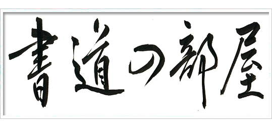
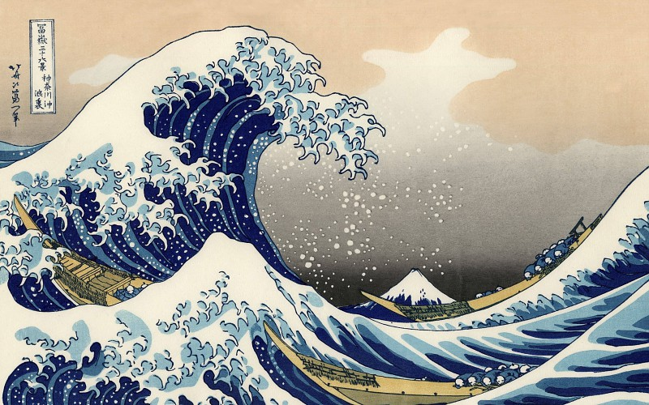
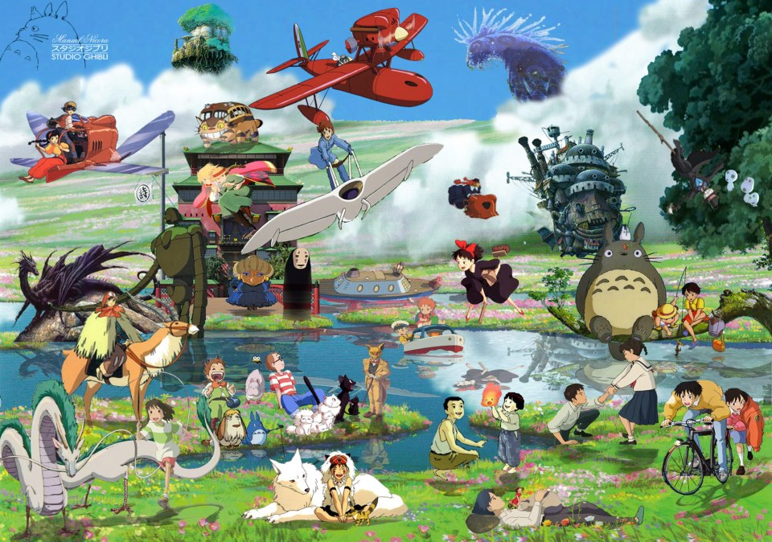
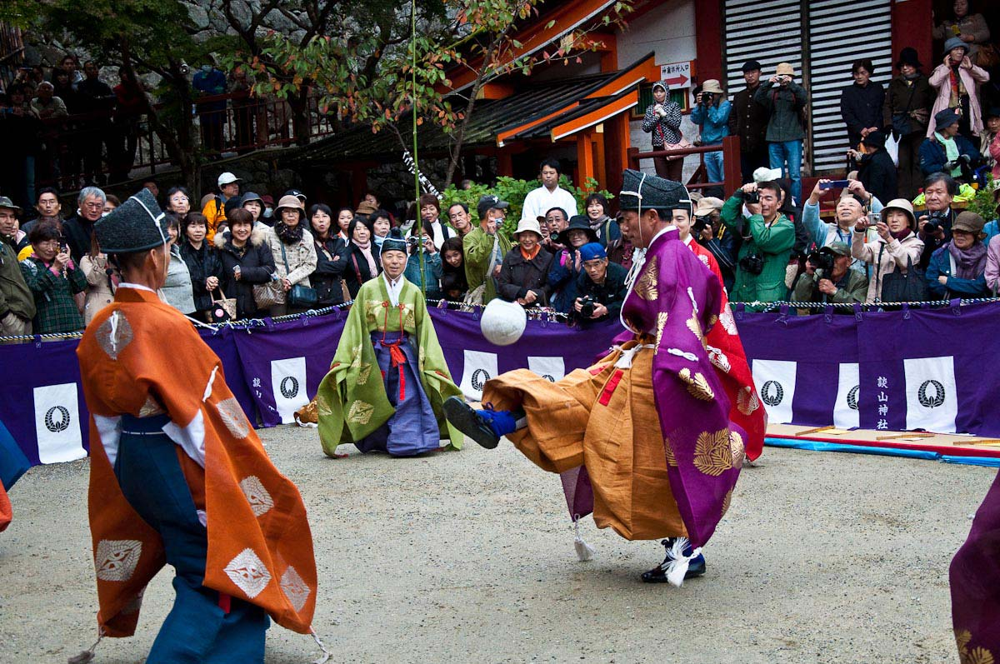

Gastronomía
La gastronomía japonesa posee un largo pasado culinario que se ha desarrollado en una gastronomía sofisticada, refinada y especializada para cada estación. Es similar a la gastronomía china con respecto a los alimentos básicos o shushoku (主食), que están basados en cinco alimentos ricos en carbohidratos (五穀: 米, 麦, 粟, 豆, 黍 o 稗): arroz, trigo y avena (plantas del género Setaria), y frijol y mijo común (plantas del género Echinocloa). Los platos, conocidos como okazu (おかず), tienen la función de dar sabor a la comida principal, y por lo general son salados.
Una comida japonesa estándar siempre consiste de una taza de arroz japonés (gohan) como shushoku, y de acompañamiento tsukemono (encurtido), que es una taza de sopa y una variedad de platos okazu como pescado, carne, vegetales, etc. También se tiene como costumbre nombrar las comidas dependiendo de la cantidad de okazu que acompañan al arroz y a la sopa. La más sencilla es la ichijū-issai (一汁一菜 'una sopa, un plato'), pero la comida tradicional es la ichijū-sansai (一汁三菜 'una sopa, tres platos'), en la que cada plato se realiza con una técnica de cocinado diferente. También cabe destacar que, como Japón es una isla-nación, se consume mucho marisco.
Algunos platos típicos japoneses pueden ser la famosa sopa Ramen, las bolas de arroz (Onigiri), el takoyaki (que consisten en bolas de pulpo) y los famosos bentos, conjuntos prestablecidos de comida para llevar.
Arte
Caligrafía
El uso tradicional japonés del pincel tiende, de por sí, a complicar la caligrafía. Su arte se expresa en frases, poemas, historias, o incluso caracteres sueltos.
Escultura
Tradicionalmente, la escultura japonesa y sus técnicas fueron derivadas de las tradiciones budistas y shinto. La madera, a menudo laqueada, dorada o pintada en colores brillantes, es el tipo más común de material de escultura. El bronce y otros metales también son importantes. Otros materiales, como la piedra y la cerámica, cumplen roles extremadamente importantes en la historia de la escultura japonesa.
Ikebana
El ikebana (活花) es el arte japonés de los arreglos florales. Ha ganado popularidad internacional por su enfoque en lo armonioso, su uso de colores, su ritmo y sus diseños elegantemente simples. El ikebana es tan practicado en Japón hoy en día como también lo es en el resto del mundo.


Ukiyo-e
El ukiyo-e es un género de impresiones en piezas de madera que ejemplifica las características del arte japonés pre-Meiji.
Pintura
La pintura japonesa ha sido un arte en el país por mucho tiempo. El pincel es la herramienta de escritura tradicional, y la extensión de ello a su uso como herramienta artística fue probablemente natural. Las técnicas nativas japonesas aún están vigentes, así como las técnicas adoptadas de Asia continental y de Occidente.
Cultura Popular
Conceptos tan diversos como el manga/anime, los videojuegos y la ternura (kawaii) forman parte de la moderna cultura popular japonesa.
La cultura popular japonesa no sólo refleja las actitudes y preocupaciones del presente, también poseen una conexión al pasado. Las películas, programas de televisión, series animadas y música son desarrolladas a partir de tradiciones literarias y artísticas antiguas, y en muchos de estos temas y estilos de presentación pueden ser considerados como formas de arte tradicional. Las formas contemporáneas de cultura popular, aparte de las formas tradicionales, proveen no sólo entretenimiento sino una forma de escape al japonés moderno de los problemas de un mundo industrializado. En un estudio para medir la cantidad de horas dedicadas al ocio y realizado por el gobierno en 1986, el 80 % de los hombres y mujeres pasaban entre dos horas y media al día en ver televisión, escuchar la radio y leer revistas y periódicos. Los adolescentes y personas retiradas reportaron más tiempo en esas actividades que en otros grupos.
Una amplia variedad de tipos de entretenimiento existen en Japón. Incluye una extensa colección de música, películas, los videojuegos y una gran industria concentrada en el manga (漫画, cómic japonés) y el anime (アニメ, dibujo animado japonés), propios del país y que han tenido una gran aceptación mundial. Otra forma de entretenimiento japonés conocido globalmente es el karaoke (カラオケ), que consiste en que un cantante aficionado canta una canción sin vocalización y cuya letra se muestra en una pantalla, para que el cantante lo pueda leer.
Uno de los estudios de anime más famosos es Estudios Ghibli, el cuál es conocido mundialmente por sus famosas películas de animación: Princesa Mononoke, Mi vecino Totoro, El castillo ambulante o El viaje de Chihiro entre otras.
Deporte
En Japón existe una diversidad de deportes tanto tradicionales como modernos, estos últimos han aparecido con posterioridad a la Restauración Meiji; ambas formas tienen una gran aceptación entre la población japonesa y son muy practicadas desde temprana edad. Con respecto a los deportes tradicionales no marciales podemos destacar la cetrería, la caza, competencia de cometas, el kemari, que es un antiguo juego de pelota y el yabusame (arquería japonesa). Entre las numerosas artes marciales japonesas, que son deportes tradicionales, tenemos entre las más importantes el aikido (deporte de contacto), el iaido (manejo de la espada japonesa), el judo (deporte de contacto), el jujutsu (deporte de contacto), el karate (deporte de contacto), el kendo (esgrima japonesa), el kenjutsu (manejo de la espada japonesa), el shurikenjutsu (manejo del shuriken o cuchilla japonesa) y el popular sumo (deporte de contacto).
Entre los deportes modernos se han importado el béisbol, el fútbol, el baloncesto, el voleibol, el tenis de mesa, el rugby y el fútbol australiano.
Medios de comunicación
En Japón existen alrededor de 100 millones de equipos de televisión en uso, y se considera como la principal forma de entretenimiento e información de la población. La programación de televisión es bastante variada, sobre todo con anime, deportes, dramas, juegos y noticias, entre otros. Existen seis redes nacionales de televisión: NHK, Nippon TV, Tokyo Broadcasting System (東, Fuji TV, TV Asahi y TV Tokyo. Entre las cadenas de televisión por cable y satélite más importantes se encuentran PNE y SKY Perfect TV.